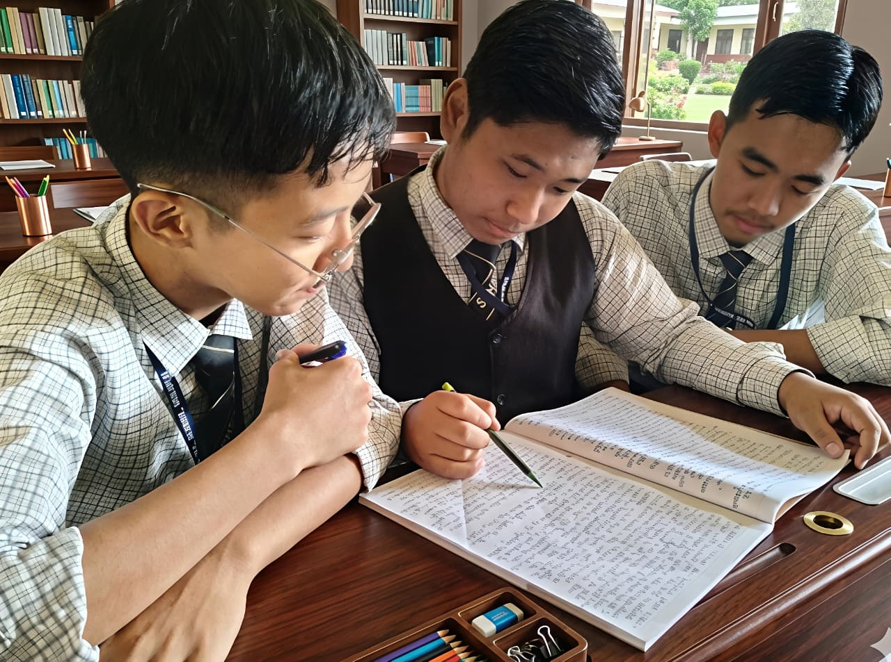

The Middle and Secondary programme at St Clare Higher Secondary School is designed to strengthen academic knowledge while developing critical thinking, independence, discipline, and confidence in students.
During Classes 6 to 10, students are introduced to a broader and more structured curriculum, including deeper learning in Mathematics, Science, Social Studies, English, and other core subjects.
Our teaching approach encourages analytical thinking, problem-solving, active participation, regular practice, and responsible study habits. Students are guided to understand subjects clearly and apply their learning with confidence.
Equal importance is given to co-curricular activities such as sports, arts, clubs, leadership opportunities, and value-based learning, ensuring balanced growth and personality development.
By the end of Class 10, students are prepared academically and personally to move into senior secondary education with confidence, clarity, and purpose.
Enquire Now“Students are guided to think deeply, work responsibly, and grow with the confidence needed for future academic success.”


We’re delighted that you’re interested in joining the St Clare family. Our Admissions Team will guide you through the process from enquiry to application.
Begin your child’s learning journey with us in a caring, disciplined, and inspiring environment.